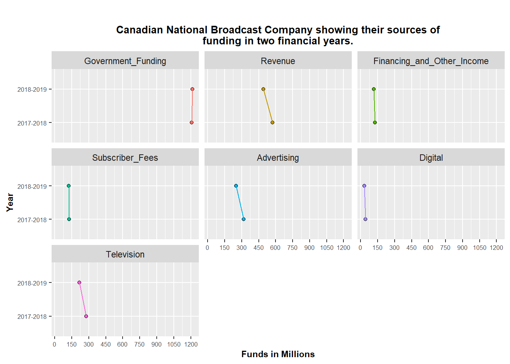

library(tidyverse)
library(plotly)
library(lattice)Code & Implementation

Redesign 1
Sources_of_Funding <- c('Government_Funding', 'Revenue', 'Financing_and_Other_Income',
'Subscriber_Fees', 'Advertising', 'Digital', 'Television')
Year1_Funding <- c(1207.7,573.1,126.6,127.2,318.3,42.6,275.7)
Year2_Funding <- c(1213.7,490.1,116.9,124.4,248.8,31.0,217.8)
m <- list(
l = 50,
r = 50,
b = 50,
t = 70
)Funding <- data.frame(Sources_of_Funding, Year1_Funding, Year2_Funding)
Funding Sources_of_Funding Year1_Funding Year2_Funding
1 Government_Funding 1207.7 1213.7
2 Revenue 573.1 490.1
3 Financing_and_Other_Income 126.6 116.9
4 Subscriber_Fees 127.2 124.4
5 Advertising 318.3 248.8
6 Digital 42.6 31.0
7 Television 275.7 217.8Plot1 = plot_ly(Funding, y = ~Sources_of_Funding, x = ~Year1_Funding, type = 'bar', name = '2017-2018',marker=list(color = 'red')) %>%
add_trace(x = ~Year2_Funding, name = '2018-2019',
marker = list(color = 'blue')) %>%
layout(title= list(text="<b> Canadian National Broadcast Company showing\ntheir sources of funding in two financial years. </b>",x=0.5,y=0.9,xanchor='center',yanchor='top'),font=list(size=10)) %>%
layout(legend= list(title=list(text='<i><b>Year</b></i>'),x=100,y=0.5),
xaxis = list(title = "<b>Funds in Millions<b>",
tick0=0, dtick=250,font=list(size=8.5)),
yaxis = list(title = "<b>Source of Funding</b>",font=list(size=8.5)),
margin = m,
barmode='group')
Plot1Redesign 2
Year <- c("2017-2018", "2018-2019")
Government_Funding <- c(1207.7, 1213.7)
Revenue <- c(573.1, 490.1)
Financing_and_Other_Income <- c(126.6, 116.9)
Subscriber_Fees <- c(127.2, 124.4)
Advertising <- c(318.3, 248.8)
Digital <- c(42.6, 31.0)
Television <- c(275.7, 217.8)mat <- data.frame(Year, Government_Funding,Revenue,Financing_and_Other_Income,Subscriber_Fees,Advertising,Digital,Television)
mat Year Government_Funding Revenue Financing_and_Other_Income
1 2017-2018 1207.7 573.1 126.6
2 2018-2019 1213.7 490.1 116.9
Subscriber_Fees Advertising Digital Television
1 127.2 318.3 42.6 275.7
2 124.4 248.8 31.0 217.8Funds = gather(mat,key = Source_of_Funding,value = Funding,Government_Funding:Television,factor_key = T)
Funds Year Source_of_Funding Funding
1 2017-2018 Government_Funding 1207.7
2 2018-2019 Government_Funding 1213.7
3 2017-2018 Revenue 573.1
4 2018-2019 Revenue 490.1
5 2017-2018 Financing_and_Other_Income 126.6
6 2018-2019 Financing_and_Other_Income 116.9
7 2017-2018 Subscriber_Fees 127.2
8 2018-2019 Subscriber_Fees 124.4
9 2017-2018 Advertising 318.3
10 2018-2019 Advertising 248.8
11 2017-2018 Digital 42.6
12 2018-2019 Digital 31.0
13 2017-2018 Television 275.7
14 2018-2019 Television 217.8Plot2 = ggplot(Funds, aes(x= Funding,y=Year,fill=Source_of_Funding,group = Source_of_Funding)) +
geom_point(shape = 21, size = 1.5) +
geom_line(aes(color = Source_of_Funding)) +
labs(title="Canadian National Broadcast Company showing their sources of\nfunding in two financial years.",fill="Source of Funding",x="Funds in Millions",y="Year")+
scale_x_continuous(breaks=seq(0,1250,by=150)) +
theme(legend.position ="none",
plot.margin = margin(t = 25,
r = 5,
b = 5,
l = 6),
plot.title=element_text(size=10,face="bold",hjust=0.5),
axis.text=element_text(size=6),
axis.title=element_text(size=8.5,face="bold"))+
facet_wrap(~Source_of_Funding)
Plot2
Using ggplotly to make the above graph interactive.
ggplotly(Plot2)